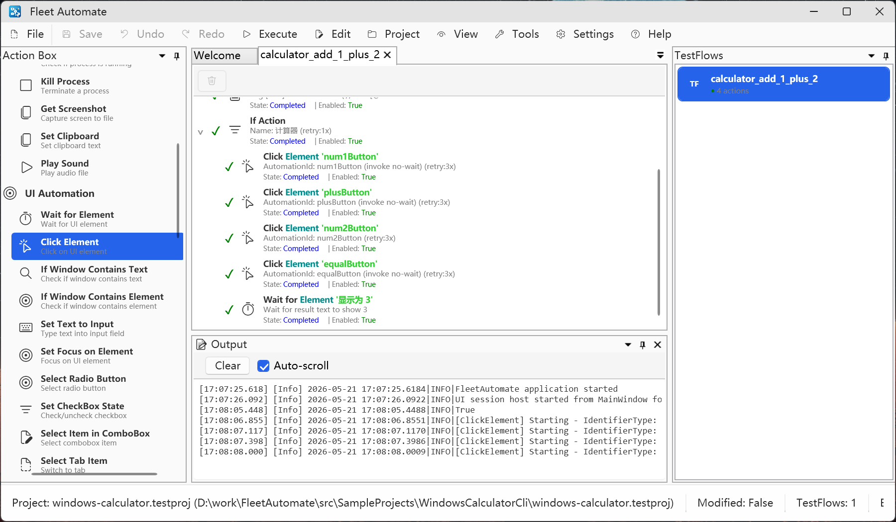

TestFlow를 시각적으로 구성
자동화, 시스템, 로직, 흐름 제어 Action을 순서가 있는 TestFlow에 배치할 수 있습니다.
Windows 앱을 위한 WYSIWYG 자동화
Fleet Automate는 시각적 Action Box, 구조화된 Flow 편집기, UI 요소 캡처, 실시간 실행 상태, 확인 가능한 로그를 통해 반복 가능한 데스크톱 자동화 TestFlow 작성을 돕습니다.

Fleet Automate를 선택하는 이유
재사용 가능한 Action으로 플로를 설계하고, 집중된 설정 대화상자로 각 단계를 구성하며, 실행 상태 변화를 UI에서 바로 확인할 수 있습니다.
자동화, 시스템, 로직, 흐름 제어 Action을 순서가 있는 TestFlow에 배치할 수 있습니다.
실행 중인 앱에서 창, 버튼, 입력 필드 및 기타 컨트롤을 식별할 수 있습니다.
Action 상태, 출력 로그, 일시 중지/재개 동작, Flow 결과를 같은 작업 공간에서 추적합니다.
프로젝트와 TestFlow는 파일 기반이므로 검사, 버전 관리, 복사, 공유가 쉽습니다.
아이디어에서 실행까지
각 Action은 식별자 유형, 검색 범위, 재시도 동작, Invoke 모드, 사전 옵션처럼 중요한 속성만 노출합니다. 목표는 빠른 설정과 숨은 가정의 감소입니다.

AI-ready CLI 자동화
Fleet Automate는 AI Agent 시대를 위한 CLI 기능을 제공합니다. Agent는 TestFlow를 만들거나 수정하고, 자동화를 실행하고, 결과를 검사하며, 사람이 관찰 가능한 UI에서 수정 작업을 반복할 수 있습니다.
Agent는 명령줄에서 프로젝트 생성, Flow 추가, Action 삽입, Action 속성 업데이트를 수행할 수 있습니다.
CLI가 Flow를 준비하고 UI-hosted 명령 세션을 통해 데스크톱 UI를 관찰 가능하게 유지합니다.
구조화된 출력에는 실행 모드, payload, 오류가 포함되어 Agent가 실패 원인을 추론하기 쉽습니다.
Agent는 selector를 개선하고 Action 설정을 업데이트하며 프로젝트를 저장하고 반복 실행할 수 있습니다.
일치하는 프로젝트가 열린 Fleet Automate UI 세션이 있으면 CLI는 명령을 해당 세션으로 라우팅합니다. 찾지 못하면 오프라인 파일 모드로 전환합니다.
mode는 ui-session 또는 offline.fleetctl testproj show --project D:\demo\sample.testproj
fleetctl testproj create --project D:\demo\sample.testproj --name SampleProject
fleetctl testflow create --project D:\demo\sample.testproj --name calculator_flow
fleetctl testflow tree --project D:\demo\sample.testproj --flow calculator_flow
fleetctl action add --project D:\demo\sample.testproj --flow calculator_flow --type LaunchApplicationAction
fleetctl action set --project D:\demo\sample.testproj --flow calculator_flow --path 0 --property ExecutablePath --value calc.exe
fleetctl action show --project D:\demo\sample.testproj --flow calculator_flow --path 0 --format json
fleetctl project save --project D:\demo\sample.testprojCompanion CLI tool
winauto-cli는 pywinauto를 감싼 Python CLI 도구로, Windows 데스크톱 자동화를 위한 검사, 상호작용, 검증, 스크린샷, selector 개선 명령 표면을 제공합니다.
PyPI에는 list-windows, find, inspect, act, assert, screenshot 같은 명령이 소개되어 있으며 Python 3.10+가 필요합니다.
pip install winauto-cliPyPI 페이지 열기워크플로
요소 식별자를 캡처하거나 입력하고 재사용 가능한 대상을 프로젝트 사전에 유지합니다.
클릭, 대기, 조건, 루프, 로그, 변수, 시스템 Action을 읽기 쉬운 플로로 결합합니다.
완료 상태, 출력 로그, 재시도, 일시 중지/재개 동작을 맥락을 잃지 않고 확인합니다.

Calculator demo
계산기 샘플은 앱 찾기, 버튼 호출, 예상 UI 대기, 실행 진행 기록까지 포함하는 완전한 UI 자동화 플로를 보여줍니다.
스크린샷

Getting started
Fleet Automate 0.1.0 Windows x64 설치:
website/releases/FleetAutomate-0.1.0-setup.exe데스크톱 앱 빌드:
dotnet build src/FleetAutomate.Application/FleetAutomate.csproj그다음 샘플 프로젝트 열기:
src/SampleProjects/WindowsCalculatorCli/windows-calculator.testproj자동화를 시작할 준비가 되었나요?
리포지토리를 clone하고 샘플 프로젝트를 열어 동작하는 TestFlow를 처음부터 끝까지 확인하세요.